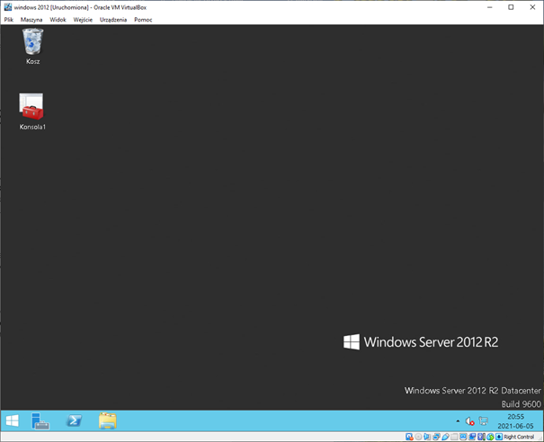
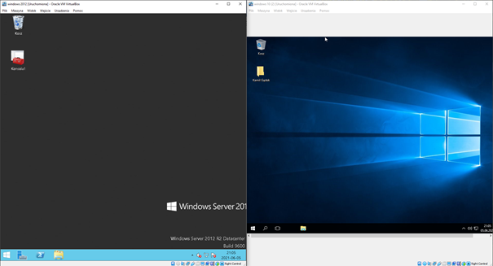
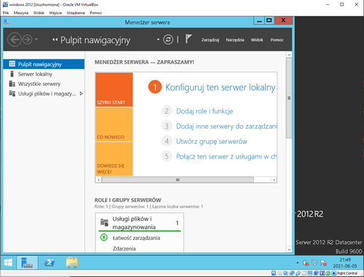

Systemem, na którym głównie będziesz pracował jest Windows Server 2012 R2.
Dlaczego nie nowszy? Ponieważ instaluje on dodatki i funkcje o wiele szybciej niż
nowsze systemy, dzięki czemu możesz zaoszczędzić czas i nauczyć się o wiele więcej!

Będziemy również korzystać z systemu Windows 10, głównie w celu nawiązania połączenia
z Windows Server. Dzięki temu dowiesz się, jak wygląda zarządzanie domenami w nowszych
systemach operacyjnych.

Programem, który będziesz otwierał najczęściej, będzie menedżer serwera.
Posłuży ci głównie do instalowania ról i funkcji serwera, które poznasz na lekcji.
